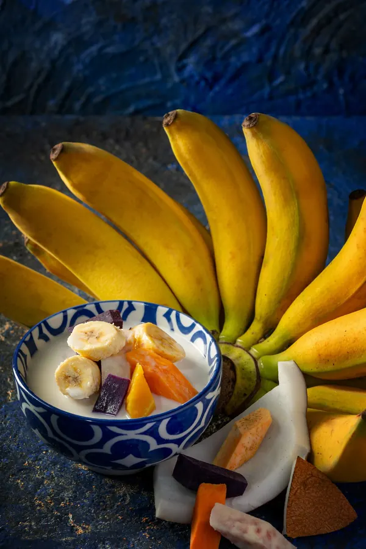

Age 12
Cooks for her family for the first time.

George Town, Penang · Since 2013
One MICHELIN Star. Heirloom family recipes, made by hand from scratch in a shophouse on Bishop Street.
or call +60 17-434 4398
Wed–Sun · 12pm–2.30pm · 6pm–9.30pm
MICHELIN Guide Malaysia
The first Nyonya restaurant in Malaysia to earn one.
Kept in every MICHELIN Guide Malaysia since the first.
Four years running
Auntie's story
A fourth-generation Nyonya, and self-taught. Six moments from a life at the stove.
Age 12
Age 18

Age 21

In her forties

2013

Age 69

On Auntie's table
Four plates and three glasses from the kitchen. Drag along the rail, or open one for a closer look.
Also from Auntie's kitchen Nasi Ulam · Otak-otak · Gulai Tumis · Bee Koh Moy · Pie Tee
The rempah
Heirloom family recipes, and every one of them prepared by hand in the kitchen on Bishop Street.


The room
GroupsLarge tables seat groups of ten or more. Booking ahead is advised.
The people


Visit
Wed–Sun · 12pm–2.30pm · 6pm–9.30pm
| Monday | Closed |
|---|---|
| Tuesday | Closed |
| Wednesday | 12–2.30pm · 6–9.30pm |
| Thursday | 12–2.30pm · 6–9.30pm |
| Friday | 12–2.30pm · 6–9.30pm |
| Saturday | 12–2.30pm · 6–9.30pm |
| Sunday | 12–2.30pm · 6–9.30pm |
Booking ahead is advised.
+60 17-434 4398 · call or WhatsApp